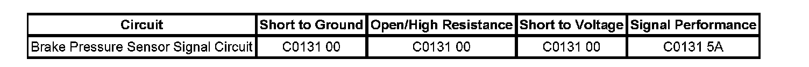

C0131
DTC C0131
DTC Descriptors
DTC C0131 00
ABS Pressure Circuit
DTC C0131 5A
Pressure Circuit calibration not learned
Diagnostic Fault Information
Perform the Diagnostic System Check - Vehicle prior to using this diagnostic procedure. Initial Inspection and Diagnostic Overview

Circuit/System Description
The electronic brake control module (EBCM) uses input from the brake pressure sensor for more accurate control during a vehicle stability enhancement system (VSES) event.
Conditions for Running the DTC
^ The ignition switch is in the ON position.
^ Ignition voltage is greater than 9.5 volts.
Conditions for Setting the DTC
^ Internal pressure sensor line fault.
^ Pressure signal does not correlate to estimated Pressure over time.
^ Brake Signal does not correlate to Pressure Signal.
^ Signal is erratic and changes faster than physically allowed.
Action Taken When the DTC Sets
^ The EBCM disables the antilock brake system (ABS)/traction control system/(TCS) and vehicle stability enhancement system/(VSES) for the duration of the ignition cycle.
^ The ABS/TCS and stabilitrak indicator turns ON.
^ The Service Traction Control, and stabilitrak displayed on the DIC.
Conditions for Clearing the DTC
^ The condition for the DTC is no longer present.
^ The EBCM automatically clears the history DTC when a current DTC is not detected in 100 consecutive drive cycles.
Diagnostic Aids
The brake fluid pressure sensor is integral to the BPMV/EBCM. The brake fluid pressure sensor is not serviceable.
Reference Information
Schematic Reference
Antilock Brake System Schematics
Connector End View Reference
Antilock Brake System Connector End Views
Description and Operation
ABS Description and Operation (Under 8600 GVW ) ABS Description and Operation (Equal to or Over 8600 GVW)
Electrical Information Reference
^ Circuit Testing
^ Connector Repairs
^ Testing for Intermittent Conditions and Poor Connections
^ Wiring Repairs
Scan Tool Reference
Scan Tool Data List for EBCM
Circuit/System Verification
With scan tool installed, clear the DTCs then drive the vehicle in a straight line at a speed greater than 20 km/h (13 mph). If the DTC did not set as a current DTC see diagnostic aids.
Circuit/System Testing
1. Apply and release brake pedal. Verify brake lamps operate properly. If brake lamps do not operate properly, refer to Symptoms - Lighting Systems. - Symptoms - Lighting
2. Test the stop lamp supply voltage circuit for a short to voltage, short to ground, an open or high resistance.
^ If the stop lamp circuit tests normal, replace the EBCM/BPMV assembly.
Repair Instructions
Perform the Diagnostic Repair Verification after completing the diagnostic procedure. Verification Tests
^ Brake Pressure Modulator Valve Replacement (W/JL4) Brake Pressure Modulator Valve Replacement (W/O JL4)
^ Electronic Brake Control Module Replacement (W/JL4) Electronic Brake Control Module Replacement (W/O JL4)
^ Control Module References for EBCM replacement, setup, and programming